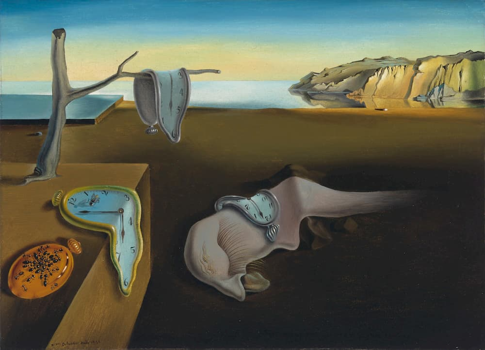
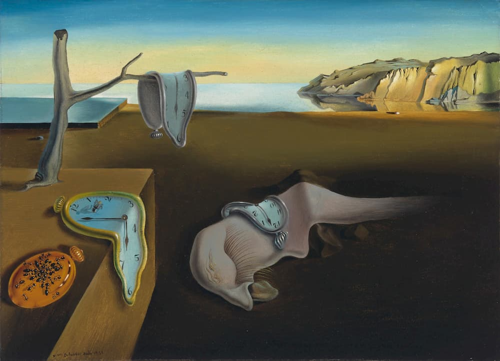

Fonti utilizzate
-power point di arte su Salvador Dalì fornito gentilmente da Adriana Stellato
-wikipedia per le didascalie delle opere
-www.html.it per aiuti al codice
-www.w3schools.com per aiuti al codice
-aiuti forniti da altri compagni di classe
Grazie per la visione!
Qua vi lascio tre bellissime opere surrealiste realizzate da Salvador Dalì,
che ho voluto utilizzare come sfondo per la realizzazione del mio sito
 


Metamorfosi di Narciso, La persistenza della memoria, Idillio atomico e uranico melanconico